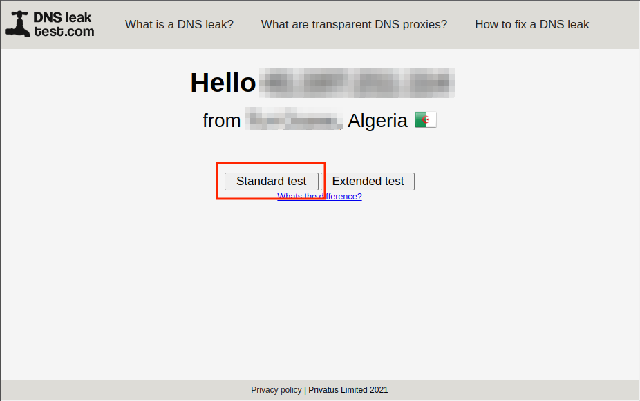
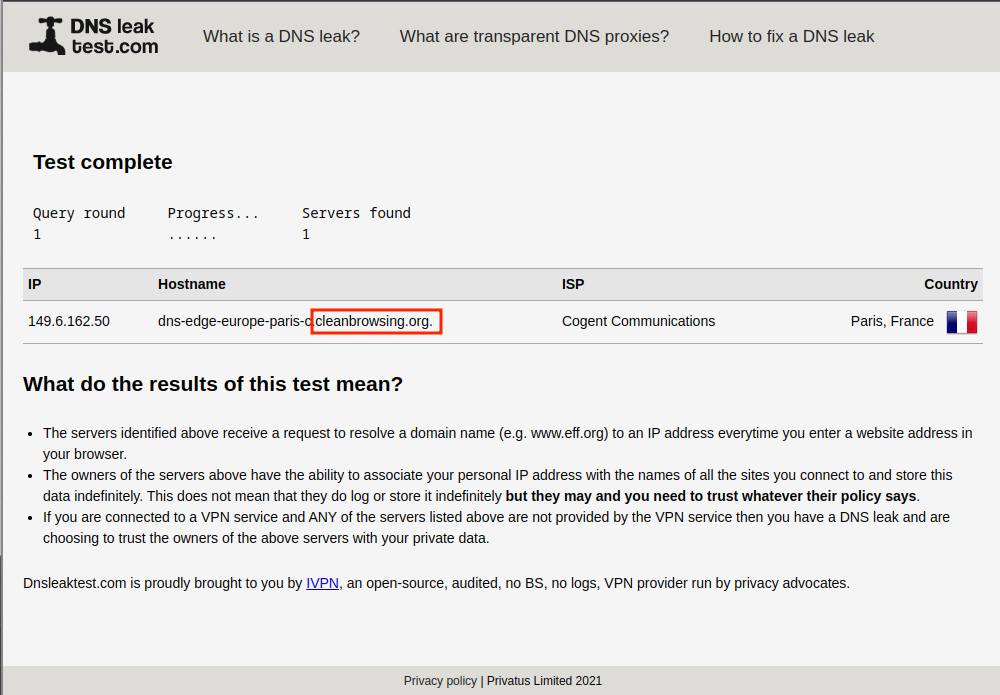

(قُل لِّلْمُؤْمِنِينَ يَغُضُّوا مِنْ أَبْصَارِهِمْ وَيَحْفَظُوا فُرُوجَهُمْ ۚ ذَٰلِكَ أَزْكَىٰ لَهُمْ ۗ إِنَّ اللَّهَ خَبِيرٌ بِمَا يَصْنَعُونَ). [سورة النور، آية: 30]
للتحقق من نجاح تثبيت DNS Filter يمكنك الذهاب إلى هذا الموقع https://www.dnsleaktest.com
يجب أن يكون ناتج الاختبار مشابهًا للصورة أدناه.
